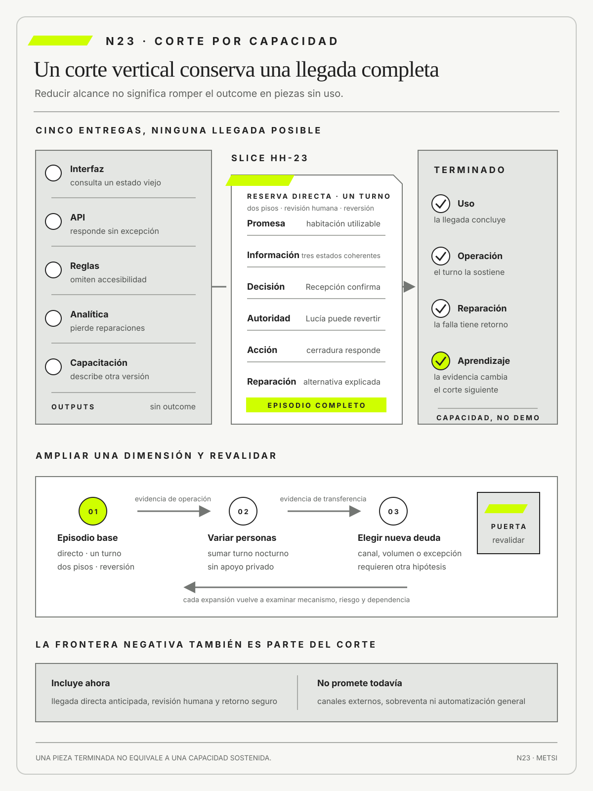

Kent Beck
Extreme Programming Explained, Second Edition. Addison-Wesley · 2004
Integró entregas pequeñas, pruebas, diseño evolutivo y retroalimentación frecuente.

Una sucesión de componentes terminados no constituye por sí sola un resultado en uso.
Capacidad y aprendizaje: cortar entregas por outcome
Ruta priorizada: 1 h 20 min a 1 h 40 min. Núcleo de lectura: 60 a 75 min; preparación: 20 a 25 min. Las extensiones agregan 30 a 45 min y profundizan el recorrido.

Nota. SIN NUM. identifica aparatos de orientación y referencia.
Seis referentes y las obras principales utilizadas para construir N23.
Integró entregas pequeñas, pruebas, diseño evolutivo y retroalimentación frecuente.

Vinculó versiones limitadas con hipótesis sobre problemas, clientes y propuestas de valor.

Desarrolló recursos de arquitectura y modelado para sistemas complejos que evolucionan por incrementos.

Articuló integración continua, refactorización y evolución segura de diseño.

Integró pruebas y evaluación de seguridad dentro del ciclo de desarrollo y operación.

Formuló el walking skeleton como estrategia de integración.
N23 no resume estas fuentes ni las convierte en receta. Las pone en tensión para construir juicio profesional.
¿Cómo dividir una iniciativa sin producir piezas técnicas que sólo sirven cuando todo está terminado?

Un corte vertical produce aprendizaje cuando conserva una capacidad completa para una población delimitada.
Un organismo divide la digitalización de una habilitación comercial en portal, API, reglas, firma, notificaciones y capacitación. Cada equipo entrega su componente según plan. La demostración mensual muestra pantallas, respuestas correctas y porcentajes acumulados. Al intentar habilitar un comercio real, ninguna combinación permite completar el recorrido.
El portal consulta una categoría anterior, la regla no contempla una excepción municipal, la firma valida una identidad pero no la autoridad y la notificación anuncia un resultado antes de que el expediente pueda emitirse. Cada especialidad demuestra progreso dentro de su frontera. La persona usuaria necesita que información, decisión, autoridad y acción formen una trayectoria coherente. La unidad de entrega organizacional y la unidad de valor quedaron desacopladas.
Dividir un alcance grande en tareas pequeñas puede mejorar coordinación y seguimiento, pero no reduce la incertidumbre principal si las partes sólo se confrontan al final. Completar primero lo conocido posterga la evidencia que podría cambiar la solución. Una API terminada no demuestra que el trámite pueda sostenerse; un conjunto de pantallas no prueba que exista decisión ni reparación.
Un corte vertical reduce la población, el episodio o la variante, pero conserva todo lo necesario para producir un resultado real. El equipo elige renovaciones simples de un rubro, una sede y un canal. Integra datos, reglas, revisión, firma, pago, notificación y contingencia. No cubre todos los casos. Sí permite que una persona obtenga una habilitación verificable y que el municipio reconstruya cómo se decidió.
Reducir alcance no significa rebajar integridad. El primer corte puede excluir variantes, pero debe declarar quién queda fuera, qué alternativa conserva y qué condición habilitará ampliación. Si accesibilidad, autoridad o reversión son parte de la promesa para la población elegida, no pueden postergarse como componentes futuros. El resultado debe poder usarse, observarse y repararse.
El criterio de aprendizaje agrega otra selección. Entre varios cortes completos, conviene priorizar el que distingue la incertidumbre capaz de cambiar más decisiones. Una trayectoria manual instrumentada puede aprender antes que una automatización. Un contrato mínimo puede revelar una incompatibilidad semántica antes que un portal terminado. La elección se justifica por la evidencia que producirá, no por la visibilidad de la demostración.
La capacidad resultante es sociotécnica. Incluye tecnología, permisos, decisiones humanas, soporte, datos y alternativas. El equipo prueba el corte durante una jornada, registra excepciones y descubre que la demora dominante está en una autoridad no disponible, no en la integración. Ese hallazgo cambia el siguiente incremento y evita escalar componentes que habrían aumentado volumen sin completar trámites.
El cierre del corte declara qué población fue atendida, qué condiciones quedaron excluidas, qué evidencia apareció y qué deuda se aceptó. La demostración no alcanza si sólo muestra pantallas: Operaciones debe poder completar y reparar el episodio sin ayuda extraordinaria. Esa prueba conecta producto, servicio y aprendizaje, y evita llamar mínimo a una versión que simplemente traslada trabajo o riesgo hacia otra persona.
N23 recibe hipótesis de N22 y las transforma en incrementos capaces de producir evidencia y capacidad. El corte deja de ser una técnica de backlog y se convierte en una decisión sobre outcome, riesgo, integración, población y aprendizaje. Su calidad se reconoce cuando el sistema permite hacer algo valioso de punta a punta y aprender qué conviene entregar después.
Al concluir su piloto de cuatro semanas, HH-22 dejó una hipótesis delimitada para reservas directas y una decisión de no ampliar la automatización a canales externos ni habitaciones accesibles. HH-23 comienza después de ese cierre y convierte la porción autorizada en una capacidad operable. Federico Müller propone entregar primero la nueva interfaz y luego integrar reglas, eventos y cerraduras.

Lucía Ferreyra objeta que una pantalla sin decisión ni reparación no permite alojar a nadie. El corte se redefine alrededor de un episodio completo y no de componentes terminados.
El primer slice cubre llegadas anticipadas de reservas directas en dos pisos. Une consulta de reserva, estado de limpieza, cerradura operativa, asignación, comunicación y contingencia. Mariela Benítez confirma el estado desde Housekeeping, Lucía decide la entrega y Ricardo Sosa observa excepciones. Camila Duarte no amplía la oferta a otros canales mientras el corte no demuestre la capacidad completa.
La evidencia incluye tiempo hasta habitación utilizable, reasignaciones, intervenciones manuales, compensaciones y motivos de detención. Una feature flag limita población y permite volver al circuito anterior. Terminado significa que el huésped completa la llegada o recibe una reparación definida, y que Operaciones puede explicar qué ocurrió sin reconstrucciones privadas de Tecnología.
La primera ejecución completa del slice, ya fuera de la ventana experimental de HH-22, encuentra una contradicción. Housekeeping declara la habitación limpia cuando finaliza su secuencia, pero Recepción necesita además una cerradura sincronizada, una asignación válida y una verificación de accesibilidad.
La verificación de accesibilidad permanece bajo revisión humana y no habilita confirmación automática: Lucía valida la condición antes de entregar la habitación, de acuerdo con la salvaguarda establecida en HH-22. El corte no intenta resolver toda la semántica del hotel. Introduce una proyección compuesta y provisoria sólo para la población elegida, conserva los estados originales para auditoría y registra que el significado compartido sigue abierto.
Esta solución limitada prueba el mecanismo sin imponer una migración total. N27 retomará la contradicción para convertir esa proyección local en un contrato verificable y decidir si corresponde crear el estado común asignable.
El segundo hallazgo aparece en el turno nocturno. La trayectoria técnica funciona, pero la persona responsable no posee permiso para revertir una confirmación. La capacidad no está terminada porque una excepción conocida depende de una autoridad ausente. Ricardo incorpora el permiso, la instrucción y el registro de reversión dentro del mismo corte. El trabajo no se clasifica como capacitación posterior, ya que modifica la posibilidad real de sostener el resultado.
La evidencia distingue uso y apoyo extraordinario. Durante los primeros casos, Federico acompaña cada llegada y corrige inconsistencias. Esa asistencia forma parte del experimento, pero impide afirmar que la capacidad es sostenible. El equipo registra cada intervención y reduce el apoyo de manera planificada. Terminado se alcanza cuando el turno resuelve la trayectoria dentro de los tiempos acordados y sabe escalar los casos excluidos sin recurrir a contactos personales.
Camila solicita sumar reservas de una agencia importante. El equipo rechaza la ampliación inmediata porque el canal no entrega el estado de accesibilidad con la misma oportunidad. El valor comercial no desaparece, pero el nuevo corte contiene otra incertidumbre y otra exposición. HH-23 lo conserva como opción para HH-24, junto con la consecuencia de postergarlo. De ese modo, la disciplina de corte no se convierte en una secuencia cerrada que ignora nuevas demandas.
El expediente registra también deuda aceptada. La bandera de activación, una conciliación manual y una ruta de contingencia son razonables durante el alcance inicial, pero aumentan complejidad si permanecen. Cada una recibe responsable, costo, señal de retiro y fecha de revisión. La velocidad de aprendizaje no se compra mediante una deuda que nadie deberá pagar.
El corte siguiente sólo se elige después de revisar qué incertidumbre redujo el primero. Como cierre, HH-24 recibirá capacidades comparables, dependencias y poblaciones todavía excluidas para priorizar mediante renuncias explícitas y no por facilidad técnica.
Una entrega produce valor y aprendizaje si conserva una capacidad completa para una población delimitada. Debe incluir integración, operación, reparación y una forma segura de volver atrás. Una lista de componentes terminados no equivale a un resultado, y ampliar antes de comprender el mecanismo aumenta la exposición sin asegurar aprendizaje. El trabajo profesional consiste en elegir cortes por la duda que pueden reducir y declarar población, deuda, riesgo y condición de ampliación antes de ejecutarlos.
En términos prácticos, el mecanismo consiste en cortar una capacidad completa para una población pequeña, atravesando interfaz, reglas, datos, operación y reparación, y confrontar una incertidumbre decisiva. Cada parte cumple una función distinta y evita que una herramienta o una métrica reemplace al razonamiento que debería sostenerla. Lo importante es poder explicar por qué esa secuencia resulta adecuada para este problema.
Puede verse en una situación cotidiana: todas las pantallas terminadas no alojan a nadie; una llegada completa en dos pisos demuestra menos volumen pero mucha más capacidad. La escena comienza simple y gana complejidad cuando aparecen población, tiempo, dependencias y consecuencias. Esa progresión permite aprender sin saltar directamente a una solución total.
Un contraejemplo marca la frontera de la tesis: llamar MVP a una versión precaria que traslada trabajo o daño y sólo funciona durante una demostración controlada. La misma práctica deja de ser defendible cuando ya no produce evidencia, desplaza daño o impide revisar el compromiso. Nombrar el límite es parte de comprender, no una nota marginal.
Hotel Horizonte vuelve concreta la distinción: Lucía confirma, Mariela prepara, Federico conecta y Ricardo observa excepciones; una feature flag limita población y permite detener. Las voces del caso no ilustran una respuesta predeterminada; muestran cómo una decisión cambia según quién sostiene la promesa, quién opera y quién recibe las consecuencias.
Para la práctica profesional, esto implica vincular terminado con capacidad y evidencia; N24 hará visible qué se posterga y quién asume la espera. El documento ofrece un paso acumulativo del recorrido, pero conserva abierta la evidencia que podría obligar a corregirlo en el núcleo siguiente.
Un corte pequeño produce capacidad y aprendizaje sólo si atraviesa integración, operación, reparación y retorno seguro para una población delimitada.

N22 entrega hipótesis con población, mecanismo, salvaguardas, umbrales y decisiones predefinidas. N23 usa esas condiciones para elegir el primer corte que atraviesa información, reglas, operación y reparación, en vez de repartir componentes que sólo funcionan al final.
N24 recibirá un conjunto de capacidades posibles y decidirá cuáles no hacer, postergar o proteger. N23 no resuelve todavía la priorización entre apuestas.
N23 combina entrega evolutiva, aprendizaje sobre problemas, arquitectura, integración continua, seguridad y diseño incremental. Las fuentes permiten distinguir un corte que atraviesa una capacidad completa de una simple división por componentes. También ayudan a separar el despliegue técnico de la exposición controlada a personas y operaciones reales.
Beck, K. vincula entregas pequeñas, integración, pruebas y retroalimentación frecuente.
Blank, S. y Dorf, B. vinculan versiones limitadas con hipótesis sobre problemas, poblaciones y propuestas de valor.
Booch, G., Rumbaugh, J. y Jacobson, I. aportan recursos de arquitectura y modelado para reconocer responsabilidades que atraviesan componentes.
Fowler, M. relaciona integración continua, refactorización y evolución de diseño sin postergar evidencia de compatibilidad.
Scarfone, K., Souppaya, M., Cody, A. y Orebaugh, A. integran pruebas de seguridad y evaluación dentro del ciclo, en lugar de tratarlas como control final.
Cockburn, A. aporta la noción de walking skeleton para integración temprana.
Ries, E. vincula hipótesis, exposición y aprendizaje decisional.
Project Management Institute vincula entrega incremental, valor y medición sin reducir el avance a componentes terminados.
DeBellis, D. et al., mediante el informe DORA 2024, actualizan la evidencia sobre lote, estabilidad y experiencia de desarrollo que condiciona un corte entregable.
DeBellis, D. et al., mediante el informe DORA 2025, advierten que la asistencia con inteligencia artificial amplifica las capacidades o restricciones del sistema donde se integra.
Scarfone, K., Souppaya, M. y Dodson, D. aportan prácticas de desarrollo seguro integradas al ciclo de vida.
W3C establece criterios verificables de accesibilidad digital.
Las tradiciones se complementan y también corrigen entre sí. La entrega frecuente puede acelerar retroalimentación y producir fragmentos sin outcome si la frontera sigue componentes. El descubrimiento puede aprender sobre preferencia y omitir condiciones de operación. La arquitectura puede describir capas con precisión y postergar su encuentro. La seguridad puede transformarse en una puerta final si no participa del primer corte. N23 exige que todas se prueben sobre una capacidad limitada pero completa.
El esqueleto operativo de Cockburn se utiliza como estrategia para revelar integración, no como excusa para una solución superficial. Debe conectar componentes reales, producir observabilidad y admitir una ruta de recuperación. Beck y Fowler aportan prácticas para mantener esa trayectoria ejecutable mientras evoluciona. Blank aporta la disciplina de vincularla con una hipótesis que puede cambiar el compromiso.
La evidencia reciente de DORA se interpreta como relación entre capacidades del sistema de trabajo y desempeño, no como una tabla de metas universales. Lotes pequeños e integración frecuente son valiosos cuando conservan calidad y reducen tiempo de aprendizaje. La frecuencia aislada puede aumentar exposición sin mejorar resultados. El informe de 2025 sobre asistencia con inteligencia artificial refuerza el carácter sistémico: una herramienta acelera tanto un buen flujo como la producción de inventario parcial si la arquitectura de trabajo permanece fragmentada.
El primer movimiento fija una unidad que pueda sobrevivir a la descomposición. Si el equipo comienza por las capas disponibles, cada especialidad producirá una definición de terminado local. Si comienza por una capacidad, debe acordar qué episodio completo podrá realizar una población y qué condiciones no pueden diferirse. Esa definición se convierte en frontera para seleccionar trabajo.
Capacidad y resultado no son equivalentes. La capacidad expresa una posibilidad sostenida, como entregar una habitación bajo determinadas condiciones. El resultado observa qué cambia cuando esa posibilidad se usa, como reducir reasignaciones evitables. Una capacidad puede existir y no producir el cambio esperado porque la población no la usa, porque el mecanismo era incorrecto o porque aparece otra restricción. N23 conserva ambas preguntas para no confundir disponibilidad con valor.
El corte se formula mediante una secuencia narrativa antes de transformarse en tareas. La narración identifica quién inicia, qué información necesita, qué decisiones ocurren, qué objetos cambian y cómo concluye o se repara. Luego cada parte técnica se justifica por su función en esa secuencia. Esta inversión reduce la tendencia a agregar funcionalidades sin relación con la hipótesis.
La frontera inicial debe ser lo bastante pequeña para aprender y lo bastante representativa para que el aprendizaje sea transferible. Un caso feliz artificial puede ser pequeño y no informar sobre operación. Un alcance que incluye todas las excepciones puede ser completo y demorar la primera evidencia. La decisión explicita qué variación se incluye, cuál se excluye y por qué la exclusión no invalida el resultado buscado.
«La pantalla ya está lista», dijo Federico. «Pero todavía no puedo entregar una habitación», respondió Lucía. Mariela preguntó: «¿Qué pasa si la cerradura no sincroniza?». Elena Acosta concluyó: «Entonces el corte no está terminado». La conversación obliga a medir una capacidad completa y no la suma de avances locales.
En simple, con un ejemplo: Una capacidad es la posibilidad sostenida de lograr un resultado bajo condiciones definidas. Incluye personas, reglas, datos, tecnología, operación y reparación, no sólo una función disponible.
Se demuestra mediante uso sobre un episodio y una población. El entregable puede estar completo mientras la capacidad no existe si faltan autoridad, soporte o manejo de excepciones.
HH-23 define qué debe poder hacer el hotel y qué evidencia permitirá afirmar que esa posibilidad ya es estable.
La estabilidad se prueba en condiciones, no mediante repetición abstracta. El equipo ejecuta el episodio en diferentes momentos del turno, con personas distintas y al menos una excepción prevista. Observa si el resultado depende de memoria individual, datos corregidos o apoyo externo. Una capacidad que funciona una vez bajo supervisión constituye evidencia de posibilidad, pero no de sostenimiento.
La capacidad incluye una frontera negativa: qué no puede hacer todavía. Esa declaración orienta a Operaciones y evita que Comercial amplíe la promesa por inferencia. También convierte exclusiones en opciones visibles para la priorización siguiente.
En este núcleo, capacidad significa aptitud sociotécnica para lograr un resultado. N24 utilizará capacidad disponible para nombrar cuánto trabajo sostenible puede absorber el sistema. La primera responde “qué puede hacer la organización bajo ciertas condiciones”; la segunda, “cuánto compromiso puede sostener sin degradarse”. Distinguirlas evita interpretar una demostración exitosa como disponibilidad ilimitada de personas, ambientes o atención. El glosario conserva capacidad sociotécnica como sentido principal de N23.
En simple: Un corte vertical, también llamado vertical slice en la bibliografía profesional, es un corte mínimo que atraviesa las capas necesarias para producir capacidad observable. Su frontera sigue un episodio de valor y no la estructura de especialidades.
Ejemplo cercano: Puede incluir interfaz, reglas, datos, integración y trabajo humano en una versión limitada. La calidad y la protección no se difieren si son necesarias para usar el corte.
La llegada anticipada con habitación accesible constituye un slice sólo cuando puede completarse de punta a punta.
La verticalidad se evalúa desde el episodio y no desde el diagrama de arquitectura. Un corte puede atravesar interfaz, servicio y base de datos y seguir omitiendo la decisión humana o la reparación. En sentido inverso, un proceso parcialmente manual puede ser vertical si completa la trayectoria y produce evidencia sobre la hipótesis.
El corte debe conservar calidad proporcional al riesgo. La población limitada reduce exposición, pero no vuelve aceptable una barrera de accesibilidad conocida. Se puede diferir variedad de canales; no se puede prometer la misma capacidad y excluir silenciosamente a quien necesita una protección.
En simple: Un corte por aprendizaje maximiza información útil para una decisión con exposición limitada. Se elige por la incertidumbre que reduce, no por ser la tarea más sencilla.
La hipótesis, la señal y la decisión posterior se declaran antes. El corte puede ser técnico, operacional o manual si permite distinguir alternativas relevantes.
Ejemplo cercano: HH-23 prioriza observar la incompatibilidad semántica de “liberada” porque reconocerla cambia la secuencia y evita escalar una promesa falsa. El corte crea una proyección provisoria para aprender, pero no declara resuelto el contrato entre productores y consumidores.
La selección por aprendizaje compara valor de información y costo de exposición. Una incertidumbre puede ser importante y requerir una prueba demasiado riesgosa. En ese caso se buscan simulaciones, datos históricos, recorridos manuales o ambientes controlados. El objetivo no es aprender a cualquier precio, sino obtener evidencia suficiente para una decisión proporcional.
El resultado de aprendizaje se redacta antes: después del corte, debería poder decidirse entre dos secuencias, dos mecanismos o dos niveles de inversión. Si cualquier observación conduciría al mismo próximo paso, el corte aprende poco aunque entregue funcionalidad.
En simple: Un corte por outcome reúne lo necesario para cambiar una condición en una población definida. Evita producir piezas terminadas que todavía no modifican la experiencia ni la capacidad de decidir.
El outcome puede ser pequeño, pero debe ser real y medible sin trasladar daño. La población excluida y la vía alternativa quedan explícitas.
Reducir reasignaciones para llegadas anticipadas accesibles es un corte por outcome; habilitar un nuevo campo no lo es.
Ejemplo cercano: Un resultado pequeño no debe confundirse con una mejora local. Puede abarcar una población reducida y mantener la trayectoria completa. La pregunta es si la condición cambia para esa población, no si el equipo redujo el tamaño de sus tareas.
El corte también registra consecuencias desplazadas. Una reasignación puede bajar porque Housekeeping absorbe más verificaciones manuales. El resultado se considera completo sólo si incluye esfuerzo, demora y riesgo transferidos hacia quienes sostienen la capacidad.
El segundo movimiento transforma la trayectoria en una arquitectura de trabajo. Cada tarea debe conectarse con una parte del episodio y cada especialidad debe encontrarse pronto con las demás. Esto no significa que todas las personas trabajen sobre todo, sino que el sistema produzca una integración observable con frecuencia suficiente para evitar sorpresas acumuladas.

La construcción comienza por el contrato más incierto. Puede ser una API, pero también el significado de un estado, la autoridad para tomar una decisión o el tiempo en que una señal sigue siendo válida. Los simuladores sirven para avanzar, pero se retiran de las relaciones críticas temprano. Un sistema de pruebas que siempre confirma el acuerdo esperado no reduce incertidumbre sobre la integración real.
La observabilidad se diseña con el corte. Cada evento necesita identificador de episodio, momento, versión y responsable suficiente para reconstruir la trayectoria sin invadir privacidad. Una métrica agregada puede mostrar que aumentó la demora y no revelar dónde. La trazabilidad permite relacionar falla técnica, decisión operacional y consecuencia para la persona.
La seguridad y la accesibilidad ingresan como propiedades de la capacidad, no como listas al final. Se seleccionan controles según el riesgo del alcance inicial y se prueba su funcionamiento junto con la ruta principal. Este criterio evita dos errores simétricos: postergar toda protección hasta una versión futura o imponer un control completo para una escala que todavía no existe y demorar evidencia sin razón.
En simple: La integración temprana confronta contratos, datos y prácticas antes de que el costo de cambio se acumule. No exige terminar todo, sino probar pronto la relación más riesgosa.
Incluye significado, temporalidad, autoridad y respuesta ante fallas, además de conectividad. La evidencia de un caso feliz no alcanza si la excepción define el problema.
Ejemplo cercano: En el hotel, cerradura, sistema de gestión hotelera (PMS) y Recepción se integran sobre una llegada real antes de expandir interfaces o automatizaciones.
La integración incluye el error. El equipo fuerza un evento tardío, una cerradura sin respuesta y una discrepancia de accesibilidad. Cada falla debe conducir a un estado comprensible y una ruta operativa. Probar sólo disponibilidad técnica deja sin evidencia la condición que más importa durante una llegada.
Integrar temprano puede disminuir temporalmente la velocidad local porque revela trabajo oculto. Esa aparente pérdida no constituye una regresión si reduce la probabilidad de descubrir incompatibilidades cuando todas las partes ya están comprometidas.
La entrega integrada produce una clase de evidencia que ningún componente aislado puede ofrecer. Permite observar si contratos técnicos y significados organizacionales coinciden, si una identidad atraviesa la trayectoria, si la operación comprende el nuevo estado y si existe reparación ante una falla. Un lote pequeño acorta el intervalo entre decisión y contraste, pero sólo genera aprendizaje cuando conserva esas relaciones. Dividir una integración en cambios diminutos que permanecen ocultos durante meses reduce tamaño de commit y no necesariamente tamaño de riesgo.
HH-23 registra cada corte con versión, población, alcance, resultado y contingencia. La prueba recorre desde una reserva confirmada hasta una habitación utilizable y fuerza una excepción. Si el despliegue termina pero el recorrido no puede ejecutarse, existe evidencia de actividad técnica y no de capacidad. Si la ruta funciona y la señal permite decidir qué ampliar o corregir, el corte produjo evidencia integrada. Esta distinción conecta lotes pequeños con aprendizaje, no con una meta abstracta de frecuencia.
En simple: Un esqueleto operable, conocido como walking skeleton, es una trayectoria mínima ejecutable que conecta las partes esenciales del sistema. Sirve para revelar supuestos de integración y operación desde el comienzo.
Puede ser austero en alcance, pero debe atravesar una ruta completa, producir observabilidad y admitir recuperación. No es una maqueta que simula dependencias críticas.
Ejemplo cercano: HH-23 lo usa para comprobar una confirmación de habitación con datos reales y reversión, antes de construir variantes.
El esqueleto debe mantenerse ejecutable mientras crece. Cada nuevo corte amplía una trayectoria y conserva pruebas sobre lo anterior. Si una versión requiere desactivar la ruta previa durante semanas, el sistema pierde capacidad de aprender incrementalmente.
Su austeridad está en la variedad, la interfaz o el grado de automatización, no en la integridad de la promesa. Puede mostrar texto simple y utilizar una decisión asistida, pero debe manejar los estados que determinan si la habitación puede entregarse.
En simple, con un ejemplo: Un producto mínimo viable es un dispositivo para probar una hipótesis de valor y uso con el menor compromiso defendible. “Mínimo” no autoriza baja calidad ni omisión de derechos.
Debe permitir una decisión y limitar población, duración y daño. Si la hipótesis puede probarse manualmente, construir software adicional puede ser desperdicio.
En Hotel Horizonte, una regla asistida con revisión humana puede aprender más y exponer menos que una automatización total.
El producto mínimo viable se vuelve problemático cuando mínimo describe calidad y viable significa apenas que puede demostrarse. N23 recupera su función experimental: es el menor dispositivo capaz de poner a prueba una hipótesis de valor y uso dentro de límites legítimos.
Una intervención manual puede ser preferible si reproduce el mecanismo relevante. No sirve cuando oculta el costo que determinaría la viabilidad a escala. El equipo registra esfuerzo extraordinario y evita concluir que una capacidad intensiva en especialistas podrá sostenerse automáticamente.
En simple, con un ejemplo: Una bandera de activación, conocida como feature flag, separa despliegue técnico de disponibilidad para poblaciones concretas. Permite aumentar o retirar exposición sin confundir el estado del código con el estado del servicio.
Cada bandera necesita dueño, combinaciones probadas, monitoreo y fecha de retiro. Acumularlas crea estados que amplían deuda y riesgo.
HH-23 registra quién puede activar la regla, para qué turnos y qué señal obliga a volver al circuito anterior.
Una bandera forma parte del gobierno de exposición. Su configuración debe ser visible para Operaciones, sus combinaciones deben limitarse y el estado debe quedar asociado al episodio. De lo contrario, dos personas pueden recibir comportamientos distintos sin que nadie pueda reconstruir la causa.
La fecha de retiro es obligatoria porque cada bandera agrega una variante del sistema. Mantener ramas antiguas por precaución puede aumentar justamente el riesgo que pretendía reducir. La evidencia de uso y estabilidad permite decidir cuándo consolidar o eliminar.
El tercer movimiento gobierna el paso desde una posibilidad técnica hacia una capacidad sostenida. La exposición introduce demanda real, variabilidad y consecuencias. Esos elementos producen la evidencia que faltaba y, al mismo tiempo, aumentan el costo de una falla. La ampliación debe equilibrar aprendizaje y protección sin convertir la cautela en inmovilidad.
Cada incremento tiene una envolvente operacional. Define volumen, población, horario, dependencias, soporte y condiciones de reversión. Mientras la experiencia permanezca dentro de esa envolvente, la evidencia puede compararse con lo previsto. Cuando la demanda la supera, el equipo no atribuye automáticamente la falla al concepto ni declara que el caso es excepcional. Registra que cambiaron las condiciones de validez.
La deuda se acepta como una decisión de cartera. Puede resultar razonable usar una conciliación manual para aprender durante una semana, pero debe conocerse su costo y el riesgo de permanencia. La deuda no declarada permite mostrar una capacidad barata porque Operaciones paga el trabajo fuera del presupuesto. HH-23 incorpora esfuerzo y fragilidad dentro de la evidencia de terminado.
La expansión no sigue una escalera automática. Puede aumentar volumen con la misma población, sumar una variante, extender horario o reducir asistencia. Cada dirección prueba una incertidumbre diferente. El siguiente corte se elige según la decisión que falta, no según una idea abstracta de madurez.
En simple: Terminado significa que el corte puede usarse, observarse, sostenerse y repararse dentro de su alcance. Las pruebas técnicas son necesarias, pero no suficientes.
La definición incluye datos, permisos, operación, accesibilidad, monitoreo, documentación y contingencia pertinentes al riesgo. Cada excepción excluida conserva una salida segura.
Ejemplo cercano: Una demostración exitosa no cierra HH-23 si el turno nocturno todavía necesita al equipo creador para resolver una discrepancia.
La definición incluye evidencia de aprendizaje transferido. La persona que recibe la capacidad debe poder explicar estados, reconocer una excepción y ejecutar la ruta de contingencia. Una capacitación realizada no demuestra esa posibilidad; un episodio resuelto sí aporta evidencia.
Terminado tampoco equivale a ausencia de defectos. Declara qué riesgos residuales son conocidos, qué impacto podrían tener y quién decide aceptarlos. La transparencia permite ampliar sin presentar una versión limitada como solución completa.
La definición se organiza en cuatro dimensiones comprobables. Uso exige que la población complete el episodio sin una simulación de la dependencia crítica. Operación exige que el turno observe estado, tome la decisión que le corresponde y sostenga una alternativa. Reparación exige revertir o compensar una consecuencia sin perder trazabilidad. Aprendizaje exige que el resultado permita elegir entre al menos dos pasos siguientes. Un corte puede aprobar tres dimensiones y permanecer abierto por la cuarta; el tablero no las promedia para declarar terminado.
En HH-23, uso se verifica con llegada directa anticipada en dos pisos. Operación se prueba durante el turno nocturno sin asistencia permanente de Federico. Reparación fuerza una cerradura sin respuesta y una condición accesible incompatible. Aprendizaje compara la hipótesis de dato tardío con la de significado divergente. La evidencia incluye tiempo hasta habitación utilizable, intervención manual, reasignación, reversión y explicación de la próxima decisión.
Scarfone, Souppaya, Cody y Orebaugh (2008) y el SSDF de NIST (Scarfone, Souppaya y Dodson, 2022) anclan la integración de evaluación y seguridad durante el ciclo, no como control posterior.
Los criterios negativos importan tanto como los favorables. El corte no termina si el único episodio correcto usó datos previamente corregidos, si la reversión perdió la restricción accesible, si el turno dependió de una cuenta excepcional o si el resultado no discrimina ninguna alternativa. Tampoco termina porque todas las tareas técnicas estén cerradas. Esas condiciones protegen contra una demostración preparada y hacen visible qué soporte extraordinario todavía forma parte del experimento.
Scrum denomina Incremento al paso concreto hacia el Objetivo de Producto y vincula su calidad con una Definición de Terminado compartida. Esa definición crea transparencia sobre qué trabajo integra realmente el producto. No equivale a criterio de aceptación de una historia, que puede describir condiciones particulares, ni a autorización operacional, que puede requerir evidencia y autoridad adicionales. Un incremento puede estar terminado según el marco y permanecer sin exposición porque la organización todavía no comprobó una contingencia necesaria.
N23 extiende esa distinción desde el producto hacia la capacidad sociotécnica. La Definición de Terminado del equipo debe incluir integración y calidad del incremento. La condición de salida de HH-23 agrega uso, operación, reparación y aprendizaje para una población delimitada. No modifica Scrum ni presenta una definición alternativa del marco. Hace visible que una organización necesita otras decisiones alrededor del incremento cuando la promesa depende de personas, proveedores y operación.
El slice vertical es la estrategia de corte que permite producir ese incremento. Atraviesa las capas necesarias para realizar un episodio significativo y evita separar interfaz, reglas, datos e integración como entregas que todavía no tienen uso. Vertical no significa incluir toda variante. El primer slice de Hotel Horizonte cubre llegadas anticipadas directas en dos pisos, conserva accesibilidad, fuerza una cerradura sin respuesta y permite volver al circuito anterior. Su estrechez está en población y variedad; su integridad está en la trayectoria.
El orden de las pruebas preserva la diferencia entre evidencia técnica y autorización. Primero se verifica el contrato entre componentes. Después se recorre el episodio con operación. Luego se fuerza la excepción y se ensaya reparación. Finalmente una autoridad decide si el alcance puede exponerse. Una revisión de sprint puede reunir evidencia y recibir objeciones, pero no reemplaza la autoridad de quien responde por la promesa. Una demostración convincente tampoco convierte un resultado local en capacidad general.
Esta arquitectura evita dos extremos. El primero declara terminado solamente cuando todo el programa está completo y pierde aprendizaje temprano. El segundo llama incremento a cualquier fragmento integrado en una rama y confunde movimiento interno con valor. HH-23 exige una unidad pequeña, completa y gobernable. Puede no resolver todo el hotel, pero debe producir una condición real para una población, mostrar sus límites y habilitar una decisión posterior.
La aceptación conserva alcance y vigencia. Cinco episodios consecutivos no prueban escala universal, pero pueden habilitar el segundo turno si incluyen variabilidad pertinente y no vulneran una salvaguarda. Una nueva población, un canal con otra semántica o la retirada de revisión humana reabren criterios. La evidencia de terminado acompaña al corte que autorizó y no se hereda como certificación permanente. Esta disciplina conecta incrementalidad con riesgo sin convertir cada incremento en una versión de baja calidad.
En simple: La deuda de integración es trabajo y riesgo diferidos al separar componentes que deberán funcionar juntos. Crece cuando contratos y datos evolucionan sin confrontarse.
Ejemplo cercano: No se observa sólo en código: conciliación manual, ambientes divergentes y decisiones tardías también acumulan interés. El registro identifica quién paga y cuándo puede activarse.
Postergar la relación entre PMS y cerraduras puede hacer parecer productivos a ambos equipos mientras vuelve más incierta la promesa completa.
La deuda acumula interés cuando cada componente adopta nuevas decisiones sobre datos y tiempos. Cuanto más tarde se integran, más cambios deben coordinarse y menos claro resulta qué versión introdujo la incompatibilidad. El registro estima ese crecimiento y lo compara con el valor de diferir.
Existe también deuda de operación. Alertas que sólo entiende un especialista, excepciones sin categoría y permisos temporales pueden no aparecer en el repositorio de código. HH-23 los trata como parte de la capacidad y evita que se conviertan en costo invisible.
En simple: La secuencia ordena cortes por aprendizaje, outcome, dependencia y protección. No es una lista de funcionalidades pequeñas ni una división uniforme del alcance.
Ejemplo cercano: Cada slice utiliza evidencia del anterior y debe preservar una trayectoria operativa. La secuencia puede cambiar si aparece una incertidumbre más peligrosa, pero registra la razón.
HH-23 avanza desde una llegada limitada hacia más turnos y casos sólo después de probar integración, excepción y reparación.
La secuencia conserva trazabilidad entre cortes. Cada uno declara qué reutiliza, qué cambia y qué evidencia del anterior justifica la ampliación. Si una nueva demanda obliga a alterar el orden, la decisión registra qué aprendizaje se posterga y qué riesgo se acepta.
Una buena secuencia produce opciones. Después de cada corte, la organización puede continuar, cambiar dirección o detener sin perder toda la inversión. Una secuencia que sólo tiene sentido al completarse reproduce el proyecto monolítico con tareas más pequeñas.
HH-23 compara tres secuencias posibles. La primera comienza por una interfaz atractiva y posterga contrato, operación y reparación; produce una demostración rápida, pero no discrimina la hipótesis de HH-22. La segunda automatiza todos los canales y recién después prueba excepciones; aumenta exposición antes de conocer la semántica del dato. La tercera ejecuta una llegada directa, en un turno, con proyección provisoria de estados, revisión humana y reversión.
Esa tercera secuencia entrega menos variedad y más información sobre el mecanismo, por lo que resulta preferible aunque complete menos componentes visibles.
El segundo corte amplía a otro turno y retira acompañamiento de Tecnología. Su pregunta no es si la función vuelve a ejecutarse, sino si la capacidad pertenece a la operación. El tercero incorpora un canal cuyo dato llega con otra temporalidad. Ese paso no reutiliza sin más la conclusión del primero: abre una hipótesis nueva sobre significado, vigencia y reparación.
Beck (2004) y Cockburn (2004) fundamentan ciclos breves e integración frecuente; Fowler (2018) aporta la posibilidad de cambiar estructura preservando comportamiento. N23 los vincula con una secuencia decisional, no con una prescripción de tamaño fijo.
Cada corte registra una conclusión limitada. El primero puede sostener que la trayectoria directa funciona bajo revisión humana. El segundo agrega que dos turnos pueden operarla sin apoyo extraordinario. El tercero sólo autoriza el canal externo si el contrato temporal conserva accesibilidad y permite reconciliar. Esta forma de acumulación evita tratar evidencia local como permiso global y prepara a N24 para comparar opciones reales de expansión.
En simple: Expandir aumenta población, volumen o compromiso después de demostrar capacidad en el alcance anterior. No es una consecuencia automática de desplegar ni de cumplir una fecha.
La escala puede alterar variabilidad, autoridad, costo y distribución de daños. Cada paso revalida mecanismo, salvaguardas y capacidad operacional.
Ejemplo cercano: El hotel amplía la regla sólo si el nuevo turno puede observar y revertir con el mismo nivel de protección que el piloto.
La evidencia necesaria crece con la consecuencia. Aumentar diez casos en el mismo turno puede requerir observar capacidad y tiempos. Incorporar un canal cuyos datos tienen otra semántica requiere revalidar el mecanismo. Eliminar revisión humana exige evidencia sobre errores, explicación y reparación. La palabra escala no debe ocultar qué dimensión cambia.
La expansión también revisa costos. Un proceso manual aceptable para aprender puede saturar Operaciones al crecer. El corte siguiente debe automatizar o rediseñar antes de trasladar esa carga a una población mayor.
La decisión registra qué dimensión cambia. Pasar de uno a dos turnos prueba transferencia y variabilidad de personas; sumar un canal prueba contratos y oportunidad del dato; aumentar volumen prueba capacidad y colas; retirar revisión humana cambia el mecanismo y la exposición. Llamar expansión a todas esas acciones impediría reutilizar correctamente la evidencia. HH-23 exige una hipótesis y una salvaguarda nuevas para la dimensión modificada y conserva como válida sólo la parte del corte anterior que mantiene sus condiciones.
HH-23 diseña un corte que produce capacidad y aprendizaje en un alcance real. Los campos obligan a incluir capas, excepción, exposición, operación y definición de terminado.
La prueba ejecuta el slice y hace fallar una integración o un caso excluido. La expansión sólo se habilita cuando la capacidad puede usarse, observarse y repararse sin asistencia extraordinaria.
El mapa se construye desde una evidencia concreta de HH-22. La hipótesis afirma que una confirmación basada en estados consistentes puede reducir reasignaciones. El primer campo traduce esa afirmación en una condición operacional: una persona con reserva directa y llegada anticipada recibe una habitación accesible utilizable o una alternativa explicada sin reiniciar el proceso. Esta formulación impide que la capacidad se reduzca a ejecutar una regla.
El episodio se representa como una secuencia de decisiones y cambios de estado. La reserva se identifica, la necesidad se confirma, Housekeeping informa condición material, la cerradura aporta disponibilidad, Recepción asigna, la persona acepta y el caso se cierra o repara. Cada paso declara fuente, autoridad y tiempo de validez. El mapa visualiza así qué parte puede automatizarse y qué parte necesita juicio situado.
Las excepciones se eligen según capacidad de invalidar el mecanismo. Una preferencia de piso puede diferirse y tratarse mediante el circuito anterior. Una discrepancia de accesibilidad no puede excluirse silenciosamente porque define si la promesa es legítima. Una cerradura sin respuesta debe activar contingencia porque prueba la integración material. El instrumento evita equiparar cantidad de casos con importancia de la excepción.
La definición de terminado contiene cuatro pruebas. Una prueba funcional confirma la trayectoria principal. Una prueba operacional verifica que el turno puede observar y reparar. Una prueba de protección fuerza un caso adverso y ejecuta reversión. Una prueba de aprendizaje determina si la evidencia permite elegir el corte siguiente. El conjunto transforma una lista genérica de calidad en criterios específicos para la capacidad.
La columna de dependencias distingue necesidad real de conveniencia arquitectónica. La llegada necesita un contrato semántico entre limpieza, asignación y cerradura. No necesita terminar previamente todo el repositorio analítico ni la aplicación móvil. Explicitar esta diferencia permite confrontar temprano lo indispensable y postergar lo que sólo parece previo porque el plan heredado lo ordenó así.
El próximo corte se elige entre ampliar turnos, sumar canales, reducir asistencia o incorporar otra excepción. Cada alternativa prueba una incertidumbre distinta. HH-23 registra qué evidencia falta para cada una y qué consecuencia podría producir. La secuencia resultante no es una promesa cerrada, sino un conjunto de opciones condicionado por aprendizaje.
La versión completada de HH-23 define como primer resultado que una persona con reserva directa y llegada anticipada reciba una habitación accesible utilizable o una alternativa explicada. Incluye consulta de reserva, condición material, respuesta de cerradura, decisión de Recepción, comunicación y reparación. Excluye canales externos y sobreventa, que conservan el procedimiento anterior.
La bandera de activación queda limitada a dos pisos y un turno; Lucía puede desactivarla; Ricardo revisa evidencia; Federico sólo interviene según un protocolo registrado. La salida exige cinco episodios consecutivos resueltos por el turno, un caso tardío y una reversión sin pérdida de trazabilidad.
El mapa declara además una deuda concreta: la proyección provisoria que combina limpieza, asignación, cerradura y accesibilidad no constituye todavía un estado compartido. Conserva procedencia y permite completar el corte, pero su semántica, vigencia y efectos deben acordarse con todos los consumidores. Esa deuda viaja a HH-24 como dependencia y reaparece explícitamente en HH-27 como problema de contrato. Así, el caso longitudinal no vuelve a descubrir una falla ya cerrada; transforma una solución local de aprendizaje en una decisión institucional verificable.
Un comercio no divide por interfaz, pagos y logística. El primer slice permite solicitar, autorizar, devolver y recibir reintegro para un tipo de compra.
La capacidad limitada revela excepciones, tiempos y responsabilidad antes de ampliar productos y canales.
HH-23 muestra que reducir alcance no exige romper el outcome en piezas sin uso.
La devolución permite observar un resultado con dos direcciones de flujo. El bien regresa al comercio y el dinero a la persona, mientras inventario, fraude, logística y contabilidad deben mantener estados compatibles. Un corte que sólo registra la solicitud crea actividad y no completa ninguna de esas trayectorias. El primer episodio limita tipo de compra y canal, pero llega hasta un reintegro observable o una negativa explicada.
La prueba incluye un producto dañado y una devolución fuera de plazo. Puede excluir otras variantes, pero no puede omitir toda excepción si la hipótesis pretende comprender capacidad operacional. La ruta manual se registra como parte del costo y no como trabajo gratuito de atención al cliente.
La transferencia modifica el criterio de terminado. En el hotel, la condición material de una habitación es central. En el comercio, importan custodia, estado del reintegro y comunicación entre organizaciones. El instrumento conserva la lógica de capacidad y cambia los contratos que debe atravesar.
Un equipo llama vertical a un corte que atraviesa capas de código pero omite soporte, política y reparación.
La demo funciona y el caso real vuelve al procedimiento manual sin registro.
La verticalidad se prueba en la capacidad sociotécnica, no en la arquitectura de software.
Otro contraejemplo aparece cuando un equipo construye una trayectoria completa que nadie puede usar sin migrar todos los datos históricos. El diagrama atraviesa capas y la dependencia elegida vuelve imposible la exposición limitada. Un corte vertical también necesita seleccionar qué historia, población y compatibilidad son indispensables para el primer resultado.
Una prueba rápida consiste en pedir a una persona de Operaciones que narre el episodio y señale cómo se recupera de una falla. Si la respuesta requiere explicar componentes internos y no puede identificar una capacidad utilizable, la verticalidad pertenece al diseño técnico y no al sistema de trabajo.
Cortar por componentes.
Una capa terminada no habilita uso si las demás permanecen simuladas. El corte debe atravesar tecnología, datos, reglas y trabajo humano suficientes para producir una capacidad observable.
Elegir lo más fácil.
El primer corte conveniente puede aprender poco sobre el riesgo crítico. La secuencia se elige por incertidumbre, outcome y exposición, no sólo por esfuerzo de construcción.
Llamar MVP a una versión de baja calidad.
Mínimo refiere al compromiso necesario para probar una hipótesis, no a omitir seguridad, accesibilidad o reparación. La calidad requerida depende de la consecuencia, incluso en una población pequeña.
Omitir excepciones.
Excluir toda variación fabrica un recorrido que no representa operación. El slice debe cubrir excepciones decisivas o declarar una salida segura y una población explícitamente limitada.
Postergar la integración.
Integrar al final acumula incompatibilidades sintácticas, semánticas y operacionales cuando el costo de cambio es mayor. Una trayectoria mínima debe confrontarlas desde el primer corte.
Confundir despliegue con exposición.
El código puede estar desplegado y no disponible para nadie, o exponerse sólo a una población protegida. Separar ambos actos permite limitar riesgo y revertir uso sin ocultar estado técnico.
Medir el avance por tareas.
Las tareas completadas no indican que el episodio funcione ni que una hipótesis cambió. El avance se observa en capacidad, evidencia y reducción de incertidumbre.
Dejar la operación fuera de la definición de terminado.
Una capacidad que no puede monitorearse, sostenerse o repararse no está terminada. Operación y soporte forman parte del corte y de su costo.
Acumular banderas de activación.
Cada feature flag crea estados y pruebas que deben gobernarse. Sin dueño y fecha de retiro, la exposición controlada se convierte en complejidad permanente.
Ampliar sin volver a validar.
Una capacidad válida para pocos casos puede fallar con otra población, volumen o combinación de excepciones. Cada expansión requiere revisar mecanismo, salvaguardas y capacidad operacional.

Un corte pequeño puede ser técnicamente seguro y aun excluir la excepción que define el problema.
El corte vertical permite que construcción, operación y aprendizaje se encuentren temprano sobre una capacidad real. El profesional puede secuenciar inversión por incertidumbre y outcome, limitar exposición y evitar que cada especialidad declare avance con piezas que todavía no funcionan juntas.
Esta competencia modifica la conversación con arquitectura y gestión. En lugar de pedir una descomposición más detallada, el profesional puede exigir una trayectoria ejecutable, una población, una hipótesis y una definición de terminado operacional. El avance se demuestra mediante una capacidad limitada que produce evidencia, no mediante porcentaje de componentes.
También mejora la relación con compras y proveedores. Un contrato puede establecer entregas incrementales verificables sobre episodios, acceso a ambientes, criterios de integración y transferencia de operación. Esa estructura reduce el riesgo de aceptar partes conforme a especificación que no forman un servicio utilizable.
Un corte pequeño puede ser técnicamente seguro y aun excluir la excepción que define el problema. También puede trasladar trabajo hacia operación o una población no observada. HH-23 exige declarar esos límites y no usar el lenguaje de mínimo para degradar derechos, calidad o reparación.
Existe una tensión entre coherencia de la trayectoria y reutilización de componentes. Diseñar exclusivamente alrededor de un episodio puede crear soluciones locales difíciles de sostener. Diseñar primero la plataforma común puede postergar valor. N23 no elimina esa tensión: elige una trayectoria y registra qué decisiones deberá generalizar antes de expandir.
Otra tensión aparece entre reversibilidad y representatividad. Un piloto muy protegido puede no reproducir condiciones normales; uno completamente real puede exponer demasiado. La envolvente operacional y el retiro gradual del apoyo extraordinario permiten producir evidencia por etapas.

HH-23 deja una secuencia de slices, una población inicial y evidencia para decidir expansión. N24 enfrentará esa capacidad con otras demandas legítimas y hará explícitas las renuncias que el corte por sí solo no resuelve.
Un corte vertical atraviesa las capas necesarias para que una población delimitada use una capacidad de punta a punta. Su tamaño se justifica por el aprendizaje y el resultado que habilita, no por la comodidad de construir componentes aislados.
Uso, integración, operación, reparación y aprendizaje forman parte de terminado. Cada corte declara alcance, evidencia, deuda y población excluida; la siguiente expansión vuelve a examinar mecanismo, riesgo y dependencia. La proyección provisoria de estados permite aprender en HH-23, pero deja explícito el contrato pendiente que N27 deberá resolver.
HH-23 entrega una secuencia de opciones. Ampliar turnos, sumar canales, reducir asistencia o incorporar excepciones requieren evidencias distintas. Esa apertura prepara N24 para elegir cuál avanza, cuál espera y qué consecuencia asume sin confundir capacidad sociotécnica con volumen disponible.

Capacidad: una capacidad es la posibilidad sostenida de lograr un resultado bajo condiciones definidas.
Corte vertical: un corte vertical, también llamado vertical slice, atraviesa las capas necesarias para producir capacidad observable.
Corte por aprendizaje: un corte por aprendizaje maximiza información útil para una decisión con exposición limitada.
Corte por outcome: un corte por outcome reúne lo necesario para cambiar una condición relevante en una población definida.
Integración temprana: integración temprana confronta contratos, datos y prácticas antes de que el costo de cambio se acumule.
Esqueleto operable: un esqueleto operable, también llamado walking skeleton, es una trayectoria mínima ejecutable que conecta las partes esenciales del sistema.
Producto mínimo viable: un producto mínimo viable es un dispositivo para probar una hipótesis de valor y uso con el menor compromiso defendible.
Bandera de activación y exposición: una bandera de activación, también llamada feature flag, separa despliegue técnico de disponibilidad para poblaciones concretas.
Definición de terminado orientada a capacidad: terminado significa que el corte puede usarse, observarse, sostenerse y repararse en su alcance.
Deuda de integración: deuda de integración es el trabajo y riesgo diferidos al separar componentes que deberán funcionar juntos.
Secuencia de slices: la secuencia ordena cortes por aprendizaje, valor, dependencia y protección.
Expansión: expandir es aumentar población, volumen o compromiso después de demostrar capacidad en el alcance anterior.
Para el encuentro, tomar una entrega dividida por componentes o utilizar la llegada anticipada del caso y rediseñarla con HH-23 como secuencia de tres cortes verticales. Justificar el aprendizaje de cada corte, su exposición y la evidencia que habilita el siguiente.